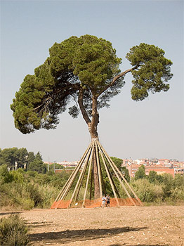

Caminada fins el Pi d'en Xandri

 |
|
El camí que us proposem va seguint la riera de Sant Medir, va baixant suaument i va creuant la riera unes quantes vegades, a estones per dins del bosc, i altres arran de conreus.
L'estructura que envolta el pi, es remunta a l'any 1997, quan l'arbre va patir una agressió vandàlica realitzant-li talls a l'escorça. La profunditat d'aquests, va fer que les ferides fossin importants i que calgués prendre mesures per salvar-lo.
Durada: 35 minuts (anada)
Distància: 1,8 km
Dificultat: baixa. Pista ampla
[ Veure mapa ] |
|